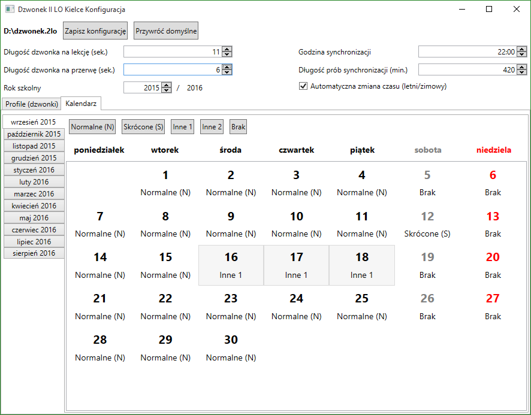
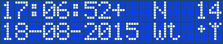
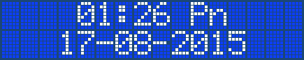
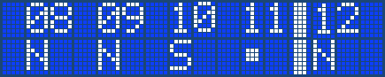
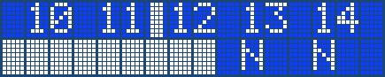
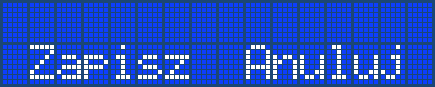
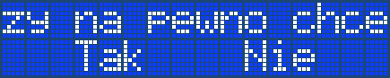
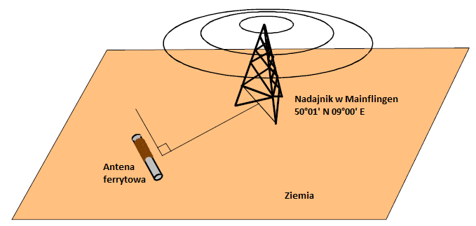

UWAGA! Jeśli tekst na wyświetlaczu jest słabo widoczny lub wcale, należy ustawić kontrast potencjometrem znajdującym się na lewym panelu obudowy.
Interfejs składa się z wyświetlacza LCD o rozmiarze 16x2 znaków oraz trzech przycisków służących do nawigacji:Podczas pobytu na ekranie startowym lub w menu głównym, wyświetlacz zostanie automatycznie wyłączony po 30 sekundach nieaktywności. Aby go włączyć, należy wcisnąć dowolny przycisk.
Zmiana jakiejkolwiek wartości jest sygnalizowana poprzez mruganie. Przyciski ▲ oraz ▼ służą do jej ustawienia, a ● do zatwierdzenia lub przejścia do następnej. W niektórych przypadkach może być zastosowany inny sposób wprowadzania/zmiany danych.
Dzwonek można skonfigurować na dwa sposoby - poprzez menu urządzenia lub za pomocą dołączonej aplikacji KonfiguracjaDzwonekIILOKielce. Zdecydowanie wygodniejsza jest opcja druga, która pozwala na skonfigurowanie dzownków oraz dni w których mają dzwonić. Program powinien znajdować się na karcie pamięci dołączonej do układu. Powinien być uruchamiany bezpośrednio z karty, aby mógł poprawnie zapisać konfigurację (plik dzwonek.2lo w głównym katalogu).
Aby załadować konfigurację do układu należy włożyć do niego kartę pamięci na której znajduje się plik z konfiguracją (dzwonek.2lo) a następnie z menu głównego wybrać opcję Zarządzaj ustawieniami, później Odczytaj z karty pamięci, a następnie zatwierdzić wybór. Układ odczyta i zweryfikuje integralność danych, a następnie gdy wyświetli komunikat o pomyślnym załadowaniu konfiguracji należy wcisnąć dowolny klawisz, aby go uruchomić ponownie. Możliwe jest również przeniesienie konfiguracji z urządzenia na kartę pamięci przy pomocy opcji Zapisz na kartę pamięci.
Wymagania karty pamięci:
Wymagania systemowe programu KonfiguracjaDzwonekIILOKielce:
Poniższy zrzut ekranu przedstawia wygląd programu:

Jest to konfiguracja domyślna, przywracana za pomocą opcji Zarządzaj ustawieniami > Przywróć fabryczne. Przywróceniu ulegają tylko ustawienia. Data i godzina pozostaje bez zmian i jest zapisana w oddzielnym układzie zliczającym czas.
Aby dzwonek mógł działać poprawnie należy skonfigurować kalendarz. W tym celu należy udać się z menu głównego do Kalendarz a następnie wybrać opcję Nowy kalendarz i zatwierdzić wybór. W tym momencie rok szkolny zostanie ustawiony na obecny, a konfiguracja dni w miesiącach zostanie ustawiona na standardową (Normalne od poniedziałku do piątku, Brak w soboty i niedziele).
Wygląd ekranu statusu przedstawia poniższy obrazek:

Wiersz 1
Wygląd ekranu z informacją o ostatniej udanej synchronizacji przedstawia poniższy obrazek:

Ekran przedstawia datę oraz godzinę ostatniej synchronizacji od włączenia urządzenia. Jeżeli synchronizacja nie odbyła się, zostanie wyświetlony napis "nigdy"
Wygląd ekranu edycji miesiąca przedstawia poniższy obrazek (październik 2015):

W górym wierszu oznaczone są kolejno dni miesiąca, zaś w dolnym przypisane do nich profile. Symbol kropki (·) oznacza brak wybranego profilu na ten dzień (dzwonki będą nieaktywne). Pionowe kreski służą do oddzielenia tygodni. Dzięki temu, możemy wywnioskować, że 12 to poniedziałek, 11 - niedziela, 10 - sobota, itd.
Aktualnie wybrany dzień jest oznaczony poprzez miganie profilu. Aby nawigować pomiędzy dniami należy użyć przycisków ▲ oraz ▼. Zmiana profilu jest wykonywana przyciskiem ●.
Aby wykonać więcej niż jedną zmianę na raz, należy wejść w tryb zaznaczania poprzez jednoczesne wciśnięcie przycisków ▲ oraz ▼. Zaznaczenie będzie symbolizowane miganiem wypełnionego pola. Od teraz można nawigować pomiędzy kolejnymi dniami, aby wybrać zakres. Zmiana profilu zaznaczonych dni jest wykonywana przyciskiem ●. Kiedy zaznaczone dni mają różne profile, po pierwszym wciśnięciu przycisku ● nastąpi ustawienie zaznaczonych dni na najczęściej występujący profil w tym zaznaczeniu. Aby wyjść z trybu zaznaczania, należy ponownie wcisnąć jednoczeście przyciski ▲ oraz ▼.
Wygląd ekranu edycji miesiąca w trybie zaznaczania:

Aby wyjść z ekranu edycji miesiąca należy nawigować przyciskami ▲ oraz ▼ aby przejść za początek lub koniec miesiąca. Wtedy ukaże się menu w którym można zapisać lub anulować zmiany.
Wygląd menu wyjścia w ekranie edycji miesiąca:

Wygląd ekranu potwierdzenia przedstawia poniższy obrazek:

Ekran potwierdzenia składa się z tekstu w górym wierszu (który może się przesuwać jeśli nie mieści się na wyświetlaczu) oraz wyboru Tak lub Nie. Zmiany wyboru dokonuje się przyciskami ▲ oraz ▼, a zatwierdza się ●.
Czas trwania ramki danych to 59 sekund, a jej nadawanie rozpoczyna się w każdej nowej minucie.
Aby zapewnić poprawny odbiór antena musi być ustawiona poziomo do ziemi (polaryzacja sygnału DCF77) oraz prostopadle do kierunku nadajnika który znajduje się w Niemczech w miejscowości Mainflingen koło Frankfurtu nad Menem (50°01' N 09°00' E). Ze względu na propagację fal długich najsilnieszy sygnał można odebrać w godzinach nocnych. Więcej informacji na temat poprawnego ustawienia anteny można znaleźć w nocie katalogowej odbiornika.
Antena znajduje się w środku urządzenia i fabrycznie jest ułożona wzdłuż krótszej krawędzi obudowy. Aby zmienić jej położenie, należy zdemontować urządzenie i przyczepić w odpowiednim kierunku dowolną metodą.
UWAGA! Nie wolno mocować anteny za pomocą metalowych uchwytów, ponieważ pogorszy to jej działanie i odbiór będzie utrudniony lub niemożliwy.
Poniższy rysunek przedstawia poprawne ułożenie anteny:

Urządzenie wyposażone jest w akumulator pastylkowy LIR2032 służacy do podtrzymania zasilania modułu odliczającego czas.
Jeżeli po ponownym uruchomieniu dzwonka data i godzina nie zostaną zapamiętane lub czas przestał być odliczany, oznacza to uszkodzenie lub zużycie akumulatora. Aby go wymienić należy zdemontować urządzenie, wyjąć stary a następnie zamontować nowy.
UWAGA! Nie wolno używać baterii CR2032, gdyż grozi to jej uszkodzeniem ze względu na to, że nie jest przeznaczona do ładowania.